本章介绍了关注神经网络性能的机制，并使网络能够通过关注其输入或记忆的相关部分来提高其性能。
有了这样一种机制，翻译、注释、解释和分段，如前一章所见，就有了更高的准确性。
神经网络的输入和输出也可以连接到外部存储器的读和写。这些网络，即存储网络，通过外部存储器得到增强，能够决定从哪里存储或检索什么信息。
在本章中，我们将讨论:
- 注意的机制
- 对齐翻译
- 图像中的焦点
- 神经图灵机
- 内存网络
- 动态存储网络
当翻译句子、描述图像内容、注释句子或转录音频时，在移动到下一部分之前，为了全局理解，在某个顺序下，一次专注于输入句子或图像的一个部分，以获得块的意义并对其进行转换，这听起来是很自然的。
例如，在德语中，在某些条件下，动词出现在句子的末尾，因此，当翻译成英语时，一旦主题已经被阅读和翻译，一个好的机器翻译神经网络可以将其焦点移动到句子的末尾，以找到动词并将其翻译成英语。通过注意机制，将输入位置与当前输出预测相匹配的过程是可能的。
首先，让我们回到使用softmax层设计的分类网络(参见第2章、使用前馈网络对手写数字进行分类)，它输出一个非负权重向量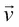，在给定输入X:
然后:
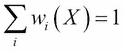
分类的目的是对于正确的类别 k 使 尽可能接近 1 ，而对于其他类别则接近零。
尽可能接近 1 ，而对于其他类别则接近零。
但是是一个概率分布，也可以作为一个权重向量来关注位置 k 处内存向量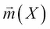的一些值:
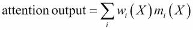
如果重量集中在位置 k ，则返回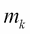。根据权重的清晰度，输出或多或少会有些模糊。
这种在特定位置寻址矢量 m 值的机制是一种注意机制:也就是说，它是线性的、可微分的，并且具有用于特定任务训练的反向传播梯度下降。
注意机制可以用来访问记忆增强网络中的一部分记忆。
神经图灵机中的记忆概念受到了神经科学和计算机硬件的启发。
存储信息的RNN隐藏状态不能存储足够大量的数据并检索它，即使当RNN增加了存储单元时，例如在LSTM的情况下。
为了解决这个问题，神经图灵机 ( NTM )首先被设计成带有外部存储库和读/写头，同时保留了通过梯度下降进行训练的魔力。
读取内存条是通过关注变量内存条给出的，就像之前例子中关注输入一样:
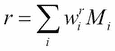
这可以用下面的方式来说明:
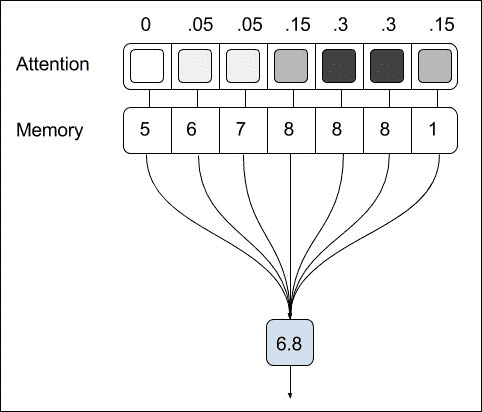
而向存储体写入值包括将新值分配给部分存储器，这要归功于另一种注意机制:
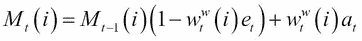
描述要存储的信息，和 要擦除的信息，和分别是存储体的大小:
要擦除的信息，和分别是存储体的大小:
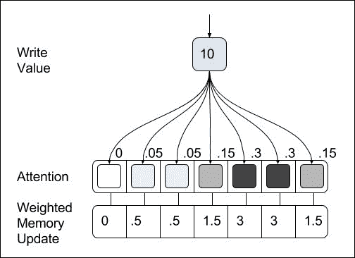
读写头设计为硬盘，其移动性由注意力权重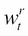和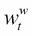决定。
记忆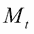会像LSTM的细胞记忆一样在每个时间步进化；但是，由于内存库被设计得很大，网络倾向于在每个时间步长存储和组织输入的数据，与任何经典的RNN相比，干扰更少。
使用记忆的过程自然是由递归神经网络驱动的，该神经网络在每个时间步充当控制器:
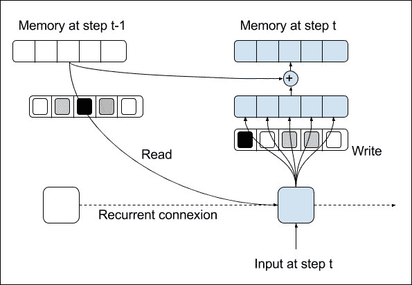
控制器网络在每个时间步的输出:
- 每个写/读磁头的定位或注意系数
- 为写磁头存储或擦除的值
原NTM提出两种方法定义头定位，也称为寻址，由权重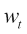定义:
- A content-based positioning, to place similar content in the same area of the memory, which is useful for retrieval, sorting or counting tasks:
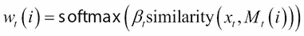
- 一种基于位置的定位，它基于磁头的先前位置，可用于复印任务。门
 定义了先前的权重对新生成的权重的影响，以计算头部的位置。移位权重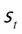定义了相对于该位置从该位置平移的量。
定义了先前的权重对新生成的权重的影响，以计算头部的位置。移位权重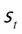定义了相对于该位置从该位置平移的量。
最后，锐化权重 减少了头部位置的模糊:
减少了头部位置的模糊:
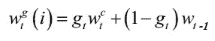
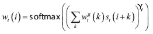
所有的操作都是可微分的。
许多两个以上的读取头是可能的，特别是对于诸如两个存储值相加的任务，单个读取头可能会受到限制。
在检索输入序列中的下一项、多次重复输入序列或从分布中抽样等任务中，这些NTM已经显示出比LSTM更好的能力。
给定一些事实或故事来回答问题或解决问题导致了一种新型网络的设计，即记忆网络。在这种情况下，事实或故事被嵌入到记忆库中，就好像它们是输入一样。为了解决需要对事实进行排序或在事实之间建立转换的任务，记忆网络在记忆库的多个步骤或跳跃中使用循环推理过程。
首先，查询或问题 q 被转换成常量输入嵌入:
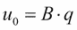
而在推理的每一步，回答问题的事实 X 被嵌入到两个存储体中，其中嵌入系数是时间步长的函数:
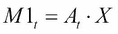
要计算注意力权重:
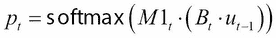
并且:
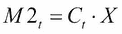
注意选择:
如前所述，每个推理时间步的输出随后与同一性连接相结合，以提高递归的效率:
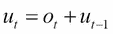
一个线性层和分类softmax层被添加到最后的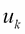:
A linear layer and classification softmax layer are added to the last :
情景记忆与动态记忆网络
另一个设计已经引入了动态存储网络。首先，N个事实用分隔符标记连接起来，然后用RNN编码:RNN 在每个分隔符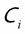 处的输出被用作输入嵌入。这种对事实进行编码的方式更加自然，也保留了时间依赖性。这个问题也用RNN编码以产生一个向量 q 。
第二，依靠与RNN混合的注意机制，用情节记忆代替记忆库，以便也保持事实之间的时间依赖性:
Secondly, the memory bank is replaced with an episodic memory, relying on an attention mechanism mixed with an RNN, in order to preserve time dependency between the facts as well:
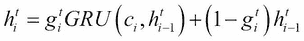
门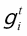由多层感知器根据推理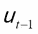的先前状态、问题和作为输入嵌入的输入 给出。
给出。
RNN的推理方式相同:
The reasoning occurs the same way with a RNN:
下图说明了计算情景记忆时输入和输出之间的相互作用:
问我任何问题:自然语言处理的动态记忆网络
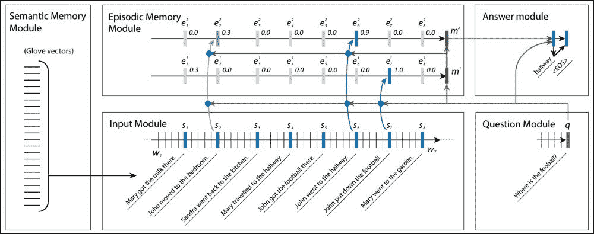
Ask Me Anything: dynamic memory networks for natural language processing
为了对这些网络进行基准测试，脸书研究所综合了bAbI数据集，使用NLP 工具为一些随机建模的故事创建事实、问题和答案。数据集由不同的任务组成，以测试不同的推理技能，例如对一个、两个或三个事实、时间、大小或位置进行推理，计数、列出或理解论据、否定、动机和寻找路径之间的关系。
至于机器翻译中的引导对齐，当数据集还包含导致答案的事实的注释时，也可以使用监督训练来:
注意机制
- 当使用的事实数量足以回答问题时，何时停止推理循环，产生停止标记
- 延伸阅读
注意机制是一个聪明的选择，可以帮助神经网络选择正确的信息，并集中精力产生正确的输出。它可以直接放置在输入或要素上(由几个图层处理的输入)。在翻译、图像注释和语音识别的情况下，精确度增加了，特别是当输入的维度很重要时。
注意力机制导致了新型的网络，通过外部存储器增强，作为输入/输出，从外部存储器读取数据或向外部存储器写入数据。这些网络已被证明在问答挑战中非常强大，自然语言处理中的大多数任务都可以被转换为:标记、分类、序列到序列或问答任务。
在下一章，我们将看到更先进的技术以及它们在更一般的递归神经网络中的应用，以提高精确度。
In the next chapter, we'll see more advanced techniques and their application to the more general case of recurrent neural networks, to improve accuracy.

 的
的